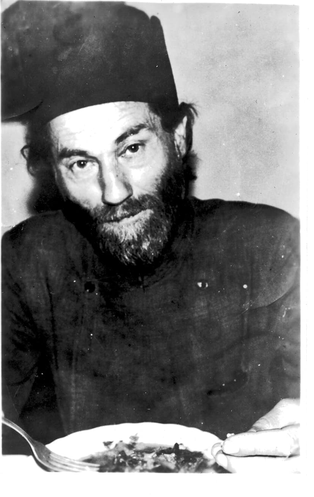
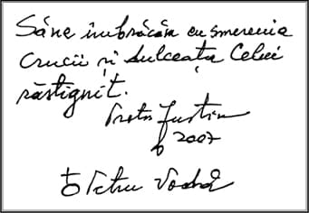
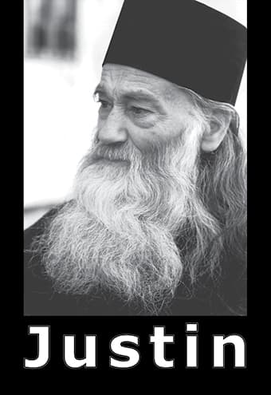

„Și — după cum proorociile arătau fariseilor și saducheilor că Hristos venise, ei necrezînd — tot așa și astăzi: în timp ce semnele arată că vom intra în epoca lui Antihrist, omenirea doarme liniștită.”
Libertatea în temnițe: de la Apostolul Pavel, la părintele Justin Pîrvu
Libertatea și adevărul nu sînt realități sociologice sau politice, și nici abstracții filosofice. Sînt realități teologice, Căci Dumnezeul treimic a zis (și a făcut): „Să facem om după chipul și asemănarea Noastră!” (Facerea 1:26) Ceea ce înseamnă că omul e făcut liber și rațional, după Sfinții Părinți. Altfel spus, libertatea, adică voința proprie, este o însușire dumnezeiască a omului, dată dintru început, încît ea nu ar fi trebuit căutată și dobîndită prin osteneală proprie, ci trebuia doar folosită în scopul cel bun, adică întru ascultarea lui Dumnezeu, care e însăși libertatea.
Zice Sfîntul Grigorie de Nissa: „Acela care l-a făcut pe om spre a fi părtaș al bunătăților Sale și Care i-a sădit în fire rîvna spre cele bune, pentru ca dorința lui să fie îndreptată mereu către Făcătorul său, nu l-ar fi putut lipsi pe om de cel mai frumos și mai de preț bun, adică de harul libertății. Căci, dacă asupra vieții omenești ar fi stat vreo silnicie, s-ar fi stricat chipul omului în acea parte, înstrăinîndu-se de prototipul după care a fost făcut, din pricina neasemănării acelei părți a omului cu prototipul. Într-adevăr, o fire supusă unor silnicii cum ar mai putea fi numită «chipul» Celui care împărățește? Ei bine, ființa care se aseamănă în toate privințele cu Dumnezeu trebuia ca neapărat să aibă în firea sa voința neatîrnată și pe deplin liberă, pentru ca împărtășirea la bunurile dumnezeiești să fie ca o răsplată a faptei sale celei bune” (Marele Cuvînt Catehetic), Neliber întrutotul și supus sufletului este (ar trebui să fie) trupul, „Dar sufletul, prin puterea cugetului, se mișcă liber în toată zidirea, ridicîndu-se pînă la ceruri și coborîndu-se în adîncuri, străbătînd întinderea pămîntului și pătrunzînd sub acesta, cîteodată ajungînd cu mintea pînă și în jurul minunilor cerești, fără să fie deloc îngreunat de povara trupului” (Sfîntul Grigorie de Nissa, în aceeași lucrare).
Adam s-a folosit însă rău de libertatea dintru început (aceasta fiind chiar o dovadă că el a fost zidit liber, după cum zice același sfînt Grigorie, că „răul se naște în lăuntrul omului, la libera lui alegere, luînd ființă atunci cînd sufletul se îndepărtează de bine”). Astfel, începătorul neamului omenesc și-a pierdut libertatea firească, ieșind de sub ascultarea Făcătorului său și făcîndu-se de bună voie rob al Satanei (care se tălmăcește „Potrivnicul”). Cum s-a întîmplat aceasta, o arată cel mai bine Sfîntul Grigorie Teologul:
„Pe viețuitorul acesta [pe om], Dumnezeu l-a pus în Rai (oricare a fost Raiul cîndva), cinstindu-l cu voință liberă, ca binele să fie nu mai puțin al celui ce îl alege (al omului) decît al Celui ce a dat semințele (al lui Dumnezeu): lucrător de pomi nemuritori — poate de gîndiri dumnezeiești, fie mai simple și mai de jos, fie mai desăvîrșite și mai înalte; gol cu simplitatea, și cu nevicleșugul și cu viața cea fără de meșteșug (care nu avea trebuință de meșteșuguri) și fără de tot acoperămîntul și apărarea; căci astfel trebuia să fie cel ce s-a zidit dintru început. Și îi dă lege, ca o materie și pricină a stăpînirii de sine [a voinței sale libere]; iar legea era porunca din care pomi (adică gîndiri dumnezeiești) trebuia el să se împărtășească și de care să nu se atingă. Iar acesta era pomul cunoștinței, cate nu s-a sădit rău din început faci Dumnezeu nu a făcut nimic rău]. Ci pomul era bun dacă omul s-ar fi împărtășit de el în bună vreme. Căci pomul era privire (adică gîndire) înaltă — după socoteala mea — la care le este fără primejdie a se sui acelora care sînt mai desăvîrșiți cu deprinderea [cu experiența, iar Adam nu avea deprindere, experiență, căci abia fusese zidit), dar nu era bun celor care sînt încă mai simpli și mai lacomi cu pofta, așa cum nici hrana cea desăvîrșită nu este folositoare celor ce încă sînt plăpînzi și au încă trebuință de lapte.”
Prin urmare, omul și-a pierdut libertatea din clipa în care Adam a urmat voii lui celei rele, cînd a călcat porunca, singura, dată de Dumnezeu. Atunci a căzut în robia Satanei, a vrăjmașului lui Dumnezeu și al oamenilor, și în robia acestei vieți muritoare. Robie din care el singur nu se mai putea răscumpăra, căci nici un rob nu se poate răscumpăra el însuși pe sine. Astfel încît a fost nevoie ca Dumnezeu Însuși să Se întrupeze și să răscumpere firea omenească din robia celui rău, prin firea Lui cea lipsiră de păcatul strămoșesc și prin moartea Lui cea necuvenită (căci moartea e urmare și pedeapsă a păcatului)1.
A fost greu însă ca oamenii, prinși vreme de 5508 ani2 în minciuna Satanei, să mai înțeleagă nevoia acestei răscumpărări și nevoia unui Răscumpărător. Păgînii nici nu se gîndeau la așa ceva, iar Iudeii (deși aveau proorociile) așteptau (ca și acum) un mîntuitor pământesc, de fapt pe Antihrist. De aceea „zicea Iisus către Iudeii care crezuseră în El: Dacă veți rămîne în cuvîntul Meu, sînteți cu adevărat ucenici ai Mei. Și veți cunoaște adevărul, iar adevărul vă va face liberi. Ei însă I-au răspuns: Noi sîntem sămînța lui Avraam și nimănui niciodată n-am fost robi. Cum zici Tu că: Veți fi liberi? Iisus le-a răspuns: Adevărat, adevărat vă spun: Oricine săvîrșește păcatul este rob al păcatului. Iar robul nu rămîne în casă în veac (este vorba de casa Tatălui, iar noi sîntem fii ai Tatălui prin Fiul); Fiul însă rămîne în veac. Deci, dacă Fiul vă va face liberi, liberi veți fi într-adevăr” (Ioan 8:31:36).
Dar ce este adevărul? — ca să întrebăm și noi asemenea lui Pilat. Adevărul este cel ce e și calea (către împărăția Tatălui) și viața (cea veșnică), adică însuși Hristos Dumnezeu. Deci Mîntuitorul zice aici așa, (după Sfințitul Teofilact): „Dacă veți petrece întru cuvîntul Meu și întru credință, veți cunoaște adevărul, adică pe Mine, căci Eu sînt Adevărul. Dacă Mă veți cunoaște pe Mine, Care sînt Adevărul, Adevărul, adică Eu, vă va slobozi pe voi de păcate cu adevărat.”
Se întîmplă însă că, de două mii de ani, Iudeii cei necredincioși și toți necredincioșii propovăduiesc că libertatea se dobîndește tocmai prin săvîrșirea păcatului, adică prin săvîrșirea nestingherită a patimilor trupești și sufletești, între care cea mai înfricoșătoare e însăși necredința! Și ei strigă: Fraților! Libertate, egalitate, fraternitate, împotriva lui Hristos! Acest îndemn la răzvrătire împotriva lui Dumnezeu, propovăduit fățiș de revoluția „Iluminaților”, adică a „Luciferienilor”, stă la temelia istoriei pe care o trăim (și de fapt la temelia întregii istorii, precum vom vedea). Ce vreau să spun e că libertatea, egalitatea și fraternitatea împotriva lui Hristos au fost scopurile revoluției a toată lumea, și putem crede că acest scop este împlinit astăzi. Căci asta au urmărit revoluțiile: liberarea omului de sub stăpînirea Ziditorului și Dumnezeului tuturor, egalitate și fraternitate întru întru patimi, hule și blestemății. Și iată că acum sîntem liberi! Liberi ca să ce? Să ne urmăm patimile, reaua voință și reaua credință. Iar aceasta însemnează cea mai amară robie, precum zice și Petru: „Ei (toți propovăduitorii revoluției, și cei bisericești, zic eu) (ne) făgăduiesc libertate, fiind ei înșiși robii stricăciunii. Fiindcă ceea ce te biruiește, aceea te și stăpînește. (2 Petru 2:19).
Puțini dintre oameni s-au folosit de răscumpărarea Mîntuitorului și de aceea răul a ajuns atît de departe, iar acum stăpînitorii cei netrupești împreună cu cei trupești ai acestei lumi a patimilor s-au întărit într-atît încît au putut să ne aducă la ultima margine a robiei (cu voia noastră, căci altminteri nu ar fi putut să o facă). Căci acum luptăm de-a dreptul pentru a dobîndi libertatea de a păcătui nestingheriți nici măcar de legea lumească, firească, sădită în firea noastră de Făcătorul a toate. (Să ne gîndim doar că sîntem liberi să propovăduim sodomia în priveliștea întregii lumii, dar nu mai sîntem liberi să o împiedicăm, căci încălcăm dreptul omului de a-și pierde sufletul, de a se înrobi diavolului celui mare, și în această viață, și în cea viitoare.)
Cu alte cuvinte, niciodată nu am fost mai puțin liberi decît în zilele pe care le trăim. Mulți văd limpede și vorbesc deschis de aceasta. Iată îngrijorarea (rece, de altfel, anemică și formală) stîrnită de așa-zisele „micro-cipuri”, de această stăpinire desăvîrșită a statului „liberal” și „democratic” asupra tuturor, încă de la nașterea fiecărui mic cetățean. Este un fapt înfricoșător, cu adevărat! Nimeni nu spune însă că acesta a ajuns a fi cu putință doar pentru că omul dorește a fi liber întru patimile sale și de fapt primește orice lanț, orice îngrădire, numai pentru a dobîndi această libertate a robiei. (După așa-zisele „atentate din 9-11”, Americanii au fost întrebați ce vor: „siguranță” sau „dreptul la intimitate”? Au ales „siguranța” în locul libertății, una de altfel foarte îndoielnică.)
Nu sîntem liberi, pentru că nu înțelegem scopul acestei vieți: acela de a ne libera de păcat și deci de diavolul. Botezul - adică moartea și învierea Mîntuitorului, pe care le încercăm prin cele trei cufundări în apa sfințită - ne-a scăpat de păcatul strămoșului Adam. Urmează a ne libera de ale noastre patimi, dacă vrem, cum am zis și cum zice același Teofilact: „Hristos ne-a slobozit desăvîrșit din păcate pe noi, cei ce ne sfințim și ne ungem cu sîngele Lui prin botezul ce se face întru moartea Lui. Căci — după însuși Pavel — toți Creștinii care se botează «se fac împreună sădiți cu asemănarea morții lui Hristos» (Romani 6:3).”
Iar altundeva, Pavel zice:
„Din El [din Dumnezeu Tatăl] sînteți voi, întru Hristos Iisus, Care S-a făcut nouă înțelepciune de la Dumnezeu, și dreptate, și sfințenie și izbăvire [libertate]” (1 Corinteni 1:30).
Loc care se înțelege așa, după Teofilact:
„Pavel zice: Iisus Hristos, Cel prin Care ne-am făcut fii ai lui Dumnezeu, ca unul ce este înțelepciune, ne-a făcut înțelepți; ca sfințenie, ne-a făcut sfinți; ca drept, ne-a făcut drepți; iar ca izbăvire, ne-a făcut slobozi. Și ne-a făcut înțelepți de unde mai-nainte eram nebuni; ne-a făcut curați, de unde mai-nainte eram necurați; ne-a făcut drepți, de unde mai-nainte eram păcătoși; și ne-a făcut slobozi, de unde mai înainte eram robi diavolului și păcatului. Și vezi rînduiala — o cititorule! Mai întîi, Hristos ne-a făcut înțelepți, fiindcă ne-a slobozit din rătăcirea slujirii la idoli și ne-a învățat adevărul cunoștinței de Dumnezeu; al doilea, ne-a făcut drepți, fiindcă ne-a dăruit iertarea păcatelor; al treilea, ne-a făcut sfinți, prin Sfîntul Său Duh; și, în cele din urmă, ne-a dăruit deplina slobozenie de toate relele, încît sîntem datori a fi toți cu totul ai singurului Hristos și numai Lui afierosiți [adică închinați).”
Și tot Pavel zice:
„Toate îmi sînt slobode, dar nu toate îmi folosesc. Toate îmi sînt slobode, dar nu mă voi lăsa stăpinit de vreuna” (1 Corinteni 6:12). „Stați dar întru slobozenia cu care ne-a slobozit Hristos și să nu vă prindeți iarăși în jugul robiei!” (Galateni 5:1) „Căci voi v-ați chemat spre slobozenie, fraților, numai să nu dați slobozenia voastră spre prilej trupului” (Galateni 5:13). „EL ne-a izbăvit [ne-a liberat] din stăpînirea întunericului și ne-a adus la împărăția Fiului dragostei Sale, întru Care avem izbăvirea și lăsarea păcatelor” (Coloseni 1:13).
Iar Teofilact adaugă la această din urmă zicere:
„Deci Dumnezeu ne-a izbăvit pe noi, care eram jos, în «stăpînirea întunericului», adică a rătăcirii și a tiraniei întunecatului diavol. Căci Apostolul nu a zis că ne-a izbăvit «de întuneric», ci «din stăpînirea întunericului», fiindcă întunecatul diavol avea multă stăpânire și tiranie asupra noastră. Căci rău ar fi fost cu adevărat și doar a ne afla sub diavol, iar a ne afla sub stăpînirea și tirania lui era încă mai rău. Și nu a zis că «ne-a scos», ci că «ne-a slobozit» din stăpânirea diavolului, ca să arate că noi ne aflam luați de el în robie, și cumplit ne ticăloșeam și că apoi Dumnezeu, slobozindu-ne pe noi, cei atît de stăpîniți de întunecatul diavol, ne-a mutat la luminata lumină a împărăției și a teoriei [„vederii”] Sale.

„Poate că aceștia sînt ultimii cîțiva ani în care mai putem să răspîndim liberi cuvîntul [lui Dumnezeul]. E mai tîrziu decît credeți… Trebuie să lucrăm cît mai e timp… Spunem că trăim într-o societate creștină, dar de fapt nu este adevărat: trăim într-o societate care este mult mai păgînă, mai urîtoare de Hristos decît lumea în care a trăit odinioară Hristos… Singura noastră speranță e să fim simpli și încrezători, urmînd să mergem înainte… Viața dubovnicească începe atunci cînd lucrurile par a fi absolut «disperate», căci de-abia atunci învățăm să ne întoarcem către Dumnezeu, iar nu să ne punem nădejdea în slabele noastre eforturi și idei.”
Așadar, a fi liber înseamnă a cunoaște adevărul, și a-l propovădui și a-l urma: „Veți cunoaște adevărul, iar adevărul vă va face liberi.” Iar adevărul e Hristos, cum ziceam. „Căci — după același Teofilact - lumină [adică adevăr] e Tatăl, lumină e și Fiul, pentru că a luminat sufletele noastre și le-a slobozit din întunericul necunoștinței, arătîndu-L oamenilor pe Tatăl, pentru care și zicea: «Eu sînt lumina lumii».
Venind acum la tema noastră (Liberi în temnițe), tragem așadar încheierea că modelul omului liber este Dumnezeu-Cuvîntul întrupat, Dumnezeu-Omul Hristos. Acesta a fost liber, fiind fără de păcat și împlinind pînă la capăt voința Dumnezeu-Tatălui, Dumnezeu fiind (iarăși zic) însăși libertatea. De aceea a și primit să fie prins și legat, deși ar fi putut să scape de ucigașii Lui („Bagă sabia în teaca ei, Petre! Oare crezi că nu pot să-L rog pe Tatăl Meu să-Mi trimită în ajutor acum 12 legiuni de îngeri?!”) Apoi, odată prins, Mîntuitorul a fost liber și la casa arhiereului și în pretoriul lui Pilat, încît nici nu a mai vorbit cu ei.
Cei care L-au urmat pe Hristos, deși în temnițe de multe ori, au fost și ei liberi asemenea Lui. Iată-l pe Pavel, care — de parcă nu i-ar fi ajuns vremea petrecută în închisoare - a cerut să fie dus la judecata împăratului Nero, deși împăratul Agrippa al Iudeii voia să-l libereze (vezi la Faptele Apostolilor). Pavel care, întemnițat, vorbea teologie cu temnicerul Festus, iar mai tîrziu (cum citim în Viața lui) filosofa împreună cu însuși Nero (nebunul filosof stoic amator, ucenic al lui Seneca).
Liberi au fost în temnițe și ucenicii de mai tîrziu ai Mîntuitorului, sfinții mucenici, dintre care mulți s-au dus de bună voie la închisoare și la moarte (de pildă, Sfântul Ignatie Teoforul, sau Sfîntul Mina). Erau liberi fiindcă erau cu Hristos. Încît duhul lor, biruind neputința trupului, nu putea să fie ținut între ziduri și înlănțuit, ci zbura pînă la cer.
Și tot așa a fost pînă în vremile noas- tre. Iată de pildă ce scria Vlădica Nicolae Velimirovici al Sîrbilor, pe cînd era întemnițat în lagărul de la Dachau:
„De aceea îl bate Dumnezeu [pe om], ca să nu se piardă; îl dă să fie chinuit de oameni, ca să nu se dea Satanei în veac — pentru a se întoarce la Hristos, la Mărgăritarul lui, la Nestematul lui, cu a cărui strălucire vedem calea în mijlocul nopții ca și la amiază, în robie ca și în libertate, în nefericire ca și în fericire.”
La noi, nici un Creștin nu a fost închis de mai multe ori decît Corneliu Codreanu, și de fiecare dată a ieșit din temniță mai întărit. Ultima oară ar fi putut nici să nu fie prins, dar s-a lăsat închis, iar dacă ar fi ieșit, ar fi ajuns negreșit conducătorul Statului Român. De aceea a și trebuit să fie ucis într-un sfârșit.
Iar ucenicii lui au urmat aceeași cale: Virgil Maxim, cu 24 de ani de pușcărie, a trăit și a murit ca un om liber. Valeriu Gafencu - pe care nici temnicerii nu-l puteau privi în ochi, de rușine, într-atît de curat era sufletește - și el a murit ca un om liber și mucenic. Sau Dumitru Bordeianu, care a petrecut mult și în iadul „reeducării” de la Pitești.
Între aceștia, Dumnezeu m-a învrednicit să-l cunosc pe părintele Justin Pîrvu (în preajma căruia am petrecut o bună vreme), care a stat 16 ani în temnițele comuniste. Mai întîi, a primit 12. Apoi, la liberare, a fost întrebat ce va face mai departe: Ce am făcut și înainte! — a zis el. Bine, banditule, atunci mai ia de la noi încă 12 ani! — i-au răspuns temnicerii. Și i-a primit și pe aceia, măcar că pînă la urmă au fost doar patru, fiindcă a venit amnistia lui Gheorghiu Dej. Întrebîndu-l despre anii petrecuți în pușcărie, părintele mi-a răspuns:
„Perioada de pușcărie? Este poate perioada așa, bună. Că, dacă n-aș fi intrat în pușcărie, cu ăștia [cu comuniștii) cine știe unde mai ajungeam? Ajunsesem cam anevoie: cînd am intrat în pușcărie, eram la seminarul din Roman și eram redactor-șef la gazeta ARDUS-ului3. E, de-acolo să știți că se deschisese un capitol foarte interesant pentru mine, dar norocu' a fost că a venit pușcăria, că altfel cine știe unde ajungeam? (rîde) Dar a avut Dumnezeu — știi — o… Poate păcatele mele de atunci au fost mai mici decît cele care ar fi urmat. Deci păcatul mic m-a scos, să nu mă duc să mă făloșesc de tot”
Și părintele a urmat:
„În pușcărie am cunoscut umilința, smerenia adevărată și dezinteresul trupesc pe care îl dobîndești doar atunci cînd știi că nu mai există nici o salvare. De la o zi la alta îți vedeai viața sfîrșită și momentul morții. Pe atunci, priveam lucrurile în ansamblul lor și știam că prezența noastră în pușcărie se justifica prin păcatele noastre și ale neamului nostru. Deci noi eram puși acolo ca să ducem povara neamului, națiunii. Pentru noi, totul se rezuma la moarte sau viață. O zi mai mult era un dar de la Dumnezeu. Toată această pregătire a făcut ca să mă orientez bine în viața de mănăstire, să deprind modul cum trebuie să ne organizăm pentru a putea fi într-adevăr celorlalți lumină, pentru a învăța cum să ne împotrivim întunericului care stăpînește veacul nostru.”
Dar, odată ajuns iar în lume, părintele Justin nu s-a oprit aici. Nici nu a plecat din țară (la Athos), cum ar fi dorit comuniștii. Ci a răbdat, așteptînd să-și împlinească menirea: aceea de a fi părinte și învățător al multora. Astfel că, la bătrînețe, s-a retras în munți și a întemeiat mănăstire, urmîndu-și gîndul din pușcărie:
„În celulele Aiudului — mi-a povestit părintele - m-a atras din ce în ce [gîndul de a face mănăstire]. Chiar după ce am ieșit din pușcărie mă gîndeam: Măi, cum ar putea fi posibil să fac o bisericuță acolo undeva, să stau într-o liniște, cum ar fi aici, prin zonele astea unde mi-am petrecut copilăria, prin poienele astea frumoase? Nu m-am despărțit niciodată de frumusețea munților, a codrilor…”
Iar mănăstirea lui nu seamănă cu nici o alta de pe la noi, căci iese din tipic, tocmai pentru că se întoarce la duhul de libertate față de lume pe care l-au avut cele dintîi mănăstiri. Căci cel mai liber dintre oameni este călugărul (dacă e călugăr) care de multe ori se închide pe sine în locașuri strîmte: chilii, găuri în pământ sau trăiește pe stîlpi. EL este liber fiindcă a ajuns liber de patimi, împlinind astfel cuvîntul Mîntuitorului, precum arată Sfântul loan Gură de Aur:
„Cel ce disprețuiește patimile, își bate joc de barbari, pe cînd cel ce cade sub puterea patimilor va suferi rele mai mari decît de la barbari. Barbarul, cînd are putere, chinuie trupul, dar patimile muncesc sufletul și-l rod din toate părțile. Barbarul, cînd are putere, dă trupul morții vremelnice, în timp ce patimile îl dau morții viitoare și veșnice. Încât liber este cel ce are libertatea desăvîrșită asupra patimilor, și rob este cel ce cade sub stăpînirea patimilor dobitocești.”

„La ora actuală, ne aflăm într-o situație oarecum apocaliptică. Vin încercări care trebuie să se împlinească. Încă de cînd aveam vreo 10-12 ani lucrurile acestea începuseră să se manifeste, bătrînii de atunci le prevedeau și acum eu parcă le înțeleg mai bine. Ele constau în căderile morale, în propovăduirea păcatelor ca pe niște valori și drepturi, dar și în îngrădirea treptată și pe ascuns a libertății umane, în introducerea unui control care vizează în final conștiințele. Dacă s-ar lucra pentru binele creștinismului, apoi nu s-ar acționa cu dibăcie, pe ocolite, prin introducerea numărului 666 întîi în carduri, pe buletine, apoi pe microcipuri, cum se întîmplă acum în lume.”
Mănăstirea părintelui Justin e deosebită pentru că trăim vremuri cu totul neasemenea cu cele din trecut. De ce? Printre altele, pentru că „vasele Sfîntului Duh au secat pentru totdeauna pretutindeni, chiar și în mănăstiri, aceste tezaure de evlavie și daruri harice” — cum spunea Sfîntul Episcop Ignatie Briancianinov încă în urmă cu un veac și jumătate. Este de-a dreptul înfricoșător să te gîndești ce povară apasă acum pe umerii acelor preoți, mai ales pe ai ieromonahilor, care se feresc să ia parte la această cumplită cădere împreună cu turma pe care o au în grijă. Întâi de toate, ei trebuie să iasă cu totul din „lume”, ceea ce e tot mai greu astăzi nu atît datorită nevoințelor trupești, cît mai ales pentru că puterea stăpînirii are acum mijloace de a ajunge peste tot. Cum zicea Cuviosul Averchie Taușev, „adevăratul monah și orice Creștin adevărat abia dacă vor putea găsi vreun adăpost îndepărtat și ascuns pentru a sluji acolo cu oarecare libertate lui Dumnezeu și pentru a nu se lăsa purtat de apostazie și apostați în slujirea satanei.” Întocmai aceasta a urmărit părintele nostru Iustin atunci cînd a întemeiat mănăstirea de la Petru Vodă. Și așa se înțelege ce a fost urmat de atâția tineri (mulți dintre ei oameni cu carte, „moderni”, „Europeni”, dar și fii de țărani simpli), dar și de unii mai puțin tineri, ba chiar de bătrîni la capătul vieții. Dintre acești călugări și mireni care stau în și pe lîngă mănăstire, se aleg acum Creștinii vremilor celor mai de pe urmă, care se vor muta în munți și în crăpăturile pietrelor, precum citim la Apocalipsă.
Libertatea este de fapt întîia temă a cărții numită „Justin”, pe care eu, și nu numai eu, îl văd ca pe cel din urmă Român liber. De ce? Fiindcă e singurul, după știința mea, liber de ceea ce numim „sistem”, „sistem” care nu e altceva decît împărăția Antihristului cel mare, ce se înstăpînește acum asupra noastră și împreună cu noi, în chipul „raiului” umanist. Căci, precum au proorocit părinții, „Antihrist nu-și va arăta numaidecît chipul satanic cu care va stăpîni, ci se va înfățișa ca binefăcător, propovăduitor al păcii, libertății, egalității și fraternității; ca, prin viclenie, să ajungă stăpânitor al întregii lumi. Popoarele vor fi amăgite, se vor lepăda de Hristos, se vor alătura Antihristului și vor preda lui puterea și stăpînirea lor (Apocalipsa 17:13)” (Dimitriu Scartsiuni). Iar scopul acestei stăpîniri? Acela ca nimeni să nu mai aibă libertatea de a face binele, adică să urmeze voia lui Dumnezeu și să-L mărturisească, altfel spus să aibă numai și numai libertatea de a face răul, și sie-și și celorlalți, fie că e vorba de trup sau de suflet. Acesta e (între altele) semnul sfârșitului acestei lumi, care se va înnoi: acela că omul chiar nu-L mai poate afla singur pe Dumnezeu, și e nevoia ca Dumnezeu Însuși să Se pogoare iarăși, la fel ca acum două mii de ani, deși nu ca om smerit, ci ca biruitor și judecător al lumii pe care El a făcut-o.
Apoi, această stăpînire ne va birui mai pe toți, pînă și pe mulți dintre cei aleși, pentru că ne pune în față tuturor de-odată (ceea ce nu s-a mai întîmplat) alegerea: Veniți cu mine, sau pieriți toți de foame, de sete și de lipsa adăpostului! Fiindcă nimeni nu va mai putea - cît de curînd, precum și vedem - câștige hrana în afara „sistemului”: meșteșugurile au fost desființate, țărănia la fel. Banii se desființează și ei, cine nu are cardul de credit (adică de îndatorare, nu de debit!), așadar cine nu e robul „sistemului”, nu poate cumpăra nimic. Și atunci piere, odată cu copiii lui. Nu e nimic greu de înțeles în asta, proorocia Apocalipsei nu are nimic tainic într-însa! Cine dintre noi e pregătit pentru o astfel de mucenicie? Justin, părintele și învățătorul multora, este pregătit, fără îndoială, și încearcă să ne pregătească și pe noi pentru aceste încercări. De pildă, întrebîndu-l unii dacă vor mai fi prigoane precum aceea pe care a trăit-o el, zicea așa:
„Prigoane, pușcării, lagăre, temnițe, izolări, înfometări, schingiuiri, umiliri, astea le-am trecut și noi. Nu mai sînt atît de grozave. Dar, prin ce veți trece voi, aceasta nu a mai fost de la începutul lumii pînă azi.4 Păi nu vedeți că lumea întreagă e un Pitești uriaș? Dacă pînă acum slugile diavolului au vrut să ne lepădăm de credință, de Adevăr, ceea ce va urma va fi satanizarea omului. Acum e încă o oarecare pace. Dar vor veni zile cînd se vor strădui din toate puterile să îndrăcească, să satanizeze omul. Și ei știu de acum cum s-o facă. Și cine și cît se va putea împotrivi îndrăcirii forțate? Aceasta este plinirea cuvîntului pe care l-a zis Mîntuitorul: «Căci va fi atunci strîmtorare mare, cum n-a fost de la începutul lumii pînă acum și nici nu va mai fi. Și, de nu s-ar fi scurtat acele zile, n-ar mai scăpa nici un trup, dar pentru cei aleși se vor scurta acele zile» (Matei 24: 21- 22). La ora actuală, ne aflăm într-o situație oarecum apocaliptică. Vin încercări care trebuie să se împlinească. Încă de cînd aveam vreo 10-12 ani lucrurile acestea începuseră să se manifeste, bătrînii de atunci le prevedeau și acum eu parcă le înțeleg mai bine. Ele constau în căderile morale, în propovăduirea păcatelor ca pe niște valori și drepturi, dar și în îngrădirea treptată și pe ascuns a libertății umane, în introducerea unui control care vizează în final conștiințele. Dacă s-ar lucra pentru binele creștinismului, apoi nu s-ar acționa cu dibăcie, pe ocolite, prin introducerea numărului 666 întîi în carduri, pe buletine, apoi pe microcipuri, cum se întîmplă acum în lume. Dacă făceau ceva bun, apoi nu s-ar fi sfiit atîta, nu s-at fi ascuns după tot felul de aparențe, nu ar acționa prin înșelare, ci ar spune deschis, cu sinceritate și curaj scopurile și conținutul multor măsuri pe care le iau. Dar cu buletinele electronice o iau pe ocolite, se vede de la distanță că umblă cu lucruri necinstite. Acest 666 din codul de bare se mută ba în permisele de conducere, ba pe pașapoarte, acum se transferă pe buletinele electronice, pe alte documente de care are omul nevoie în viața lui socială, pentru ca să-l prindă în cleștele diavolului și să-l poată pierde. Acum nu mai au nevoie de confruntări ca să creeze martiri ca altădată, ci folosesc metoda înșelării pentru a putea prinde sufletul Creștinului, Dar este vremea cînd toate acestea trebuie să se împlinească. Toți oamenii vor fi legați, prin satelit, direct la calculatoare. Prin 1950, lucram la mină, ca deținut politic, la Baia Sprie. Printre noi se aflau inginerii și meseriașii mineri. Ca să nu ne afle numele, să nu știe cine suntem, ne-au dat niște numere, cusute pe mînecă. Nu mai aveam nume, ci răspundeam la un număr pe care îl strigau paznicii. Vremurile de acum desăvîrșesc ceea ce s-a făcut în comunism; că, de fapt, se urmează fără întrerupere același plan. Vor să ne pună pe toți în starea de deținuți cum eram noi atunci, să ne dea un număr la care să răspundem. Dar mai ales prin care să ne poată controla tot timpul. Cu cardurile și buletinele electronice încep marile îngrădiri. Odată ce te-au prins în laț, nu mai ai cum să scapi.”
Vorbind cu unii dintre ucenicii lui apropiați, părintele le zicea așa:
„Acuma se pune problema mîntuirii individuale. Vrei să te mîntuiești? Trebuie să treci barajul de artilerie! — cum există metoda aceasta de război a individului, să treacă printr-un baraj de artilerie. Acolo n-ai comandant de grupă, nici de pluton, nici de companie; ești singur cu lopata Linemann și cu arma ta. Așa te strecori printre proiectilele care cad în dreapta și-n stînga; da! tot trebuie să pătrunzi acest zid de foc. Și-așa se strecoară și Creștinul la ora aceasta. Vrei să te mîntuiești? Trebuie să-ți iei viața pe cont propriu, Să ți-o orientezi în așa fel, încît… Au venit vremuri cînd nu mai ai comandant. Atunci, trebuie să rezistăm, să ne rugăm să ne lumineze harul Domnului. Și-așa, privind în urmă la martiri și mucenici, punem și noi aicea o mică jertfă. Că, dacă aștepți astăzi sfaturi sau metode, nu ieși la liman. Pentru că iată: iese o Scriptură acuma, mai iese o Scriptură peste vreo patru-cinci ani, mai iese o Scriptură în înțelegerea comună cu toate ma- trapazlicurile acestea iudaice, și nu mai ai ce face.”

„În ultimele zile înainte de venirea lui Hristos, Biserica își va păstra acest chip: un singur episcop Ortodox, un singur preot Ortodox, un singur laic Ortodox. Eu nu spun că nu vor mai fi biserici, dar Ortodoxia se va păstra doar în acest chip. Tu ia aminte la aceste cuvinte și înțelege că așa va fi în întreaga lume!”
Aici, părintele este întrebat: Păi va fi o Biserică fără preoți, fără arhierei? La care el răspunde:
„Da, iată că a fost și în vremurile grele ale creștinismului, cînd te lua, te lăsa să îți faci rugăciunea, și îți tăia capul. Acolo n-avea nici preot, nici… Avea [și arată în sus cu brațul)…
Iar cuvîntul se încheie astfel:
El zice:
„Vom fi puși la încercare, dar să nu ne temem, turmă mică! — fiindcă Domnul rămîne cu noi. Să nu ne gîndim însă că vom trece prin viață, prin viața creștină, și nu ne vom asemăna cu durerile Mîntuitorului Hristos, cînd a spus: «Dumnezeul Meu, Dumnezeul Meu, pentru ce M-ai părăsit?» Orice suferință își are menirea ei. Și, dacă sîntem conștienți de această menire, o putem primi cu toată inima. Să fiți încredințați că asta vi se cere de la Dumnezeu: să primiți cu toată inima ceea ce vine! Căci, dacă e îndoială, nu mai e jertfă. Să fiți pregătiți în fiecare zi și în fiecare clipă!”
P. S. Noi nu sîntem liberi pentru că ne lăsăm robiți întîi de patimile proprii și apoi de „binefacerile” împărăției Antihristului, pe care o numim „sistem” („establishment-ul”, rînduiala lumească încetățenită). Nu sîntem liberi pentru că nu ne punem nădejdea în purtarea de grijă a Ziditorului și Părintelui nostru cel Ceresc și zicem că nu se poate trăi fără „card-uri”, asigurări și (de ce nu?) „cip-uri”. Se poate, iar dacă nu, înseamnă că Dumnezeu a rînduit să părăsim viața cea vremelnică chiar din pricina aceasta, căci o oarecare pricină a ieșirii sufletului din trup tot trebuie să fie. Nu sîntem și nu vom fi liberi pentru că nu sîntem liberi în gîndire, adică nu gîndim după slova și duhul Scripturilor, întru care se cuprinde adevărul a tot ceea ce trebuie să știm, de la cum și pentru ce s-a zidit această lume și pînă la cum se va înnoi ea. Spre deosebire de noi, mărturisitorii și mucenicii tuturor temnițelor au fost liberi precum păsările văzduhului și precum sfinții îngeri, pentru că au primit asupra trupurilor lor lanțurile, dar sufletul și mintea lor nu a primit duhul mincinos al veacului acesta trecător și bicisnic. Multe ar mai fi de spus aici, căci aceasta e singura temă „de actualitate”, cum se zice, dar nu mai am loc de adăugiri, și nici nevrednicia proprie nu mi le îngăduie acum.
Note
1 Este un loc foarte însemnat aici, căci oamenii se întreabă: De ce sîntem vinovați de păcatul strămoșului, de vreme ce nu noi l-am săvârșit? Trebuie să înțelegem că Făcătorul a suflat duh de viață întru Adam, și acest duh dumnezeiesc a trecut întru tot neamul omenesc din generație în generație. Cu alte cuvinte, noi avem întru noi duhul de viață dumnezeiesc prin Adam, și de la Adam prin împreunarea bărbatului cu femeia (de aceea nici nu poate fi clonat omul). Cum zice Pavel, toți am păcătuit întru Adam, pentru că în el s-a cuprins sămânța întregii furi omenești. La fel, prin Noul Adam Hristos, Care nu S-a născut din împreunare bărbătească, toată firea omenească a fost zidită din nou și răscumpărată de păcatul strămoșului. Iar nouă ne-a rămas doar să ne liberăm de păcatele proprii, de voia noastră cea rea, aceasta fiind lucrarea vieții creștine.
2 Atîția ani avea lumea cînd S-a întrupat Mîntuitorul. E bine să ne amintim aceasta ori de cite ori avem prilejul, ca să mai uităm de miliardele de ani ale așa-zisului „evoluționism”.
3 Asociația de prietenie româno-sovietică.
4 Precum zice Mîntuitorul: „Căci va fi atunci strîmtorare mare, cum n-a mai fost de la începutul lumii pînă acum și nici nu va mai fi” (Matei 24:21, 22). Stih pe care Sfințitul Teofilact, în urma Sfîntului Ioan Gură de Aur, îl tîlcuiește așa:
„Unii înțeleg acestea ca spuse pentru zilele cînd va veni Antihrist, dar nu este așa, ci vorbește despre robirea Ierusalimului [de către Romani]”. Și tîlcuirea aceasta e adevărată; dar, ca pildă, stihul poate fi înțeles și ca înfățișare a strîmtorării Creștinilor vremii noastre.
Comentarii